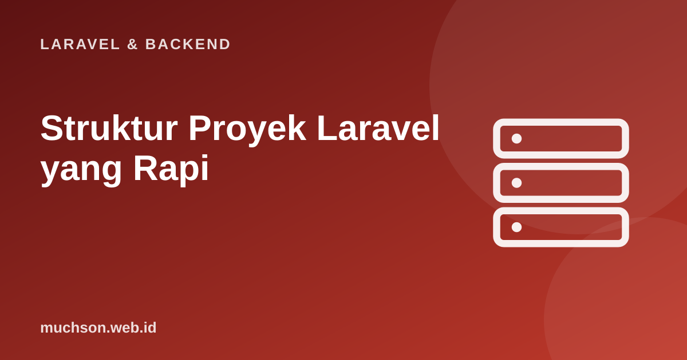

Beranda › Artikel › Laravel & Backend
Laravel & BackendStruktur Proyek Laravel yang Rapi: Service, Action, Clean Code
Laravel memudahkan memulai, dan itulah jebakannya: semua logika menumpuk di controller sampai satu method memiliki 200 baris dan tidak ada yang berani menyentuhnya. Struktur yang baik bukan soal pola yang rumit, melainkan menaruh setiap hal di tempat yang masuk akal, dan menambah lapisan hanya ketika rasa sakitnya nyata.
Sebaiknya sudah paham: CRUD Laravel, Eloquent, dasar PBO dan SOLID

Setelah membaca dan mencoba materi ini, Anda mampu:
- mengenali tanda "controller gemuk" dan model gemuk
- memindahkan logika ke kelas Action atau Service yang fokus
- memakai DTO atau array terstruktur untuk membawa data antar lapisan
- memutuskan kapan lapisan tambahan (repository) bermanfaat atau berlebihan
- menerapkan penamaan, ukuran fungsi, dan pengujian yang menjaga kode tetap bersih
Kode PHP/Laravel di artikel ini mengikuti dokumentasi Laravel (versi 11 dan seterusnya, PHP 8.2 atau lebih baru). Bagian "cara kerja di balik layar" dijalankan sungguhan dengan Python atau JavaScript agar konsepnya dapat dibuktikan.
Gejala: controller gemuk
<?php
// Semua dalam satu method: validasi, stok, pembayaran, email, log, hitungan...
public function store(Request $request)
{
$request->validate([...]);
$total = 0;
foreach ($request->items as $i) {
$p = Produk::find($i['id']);
if ($p->stok < $i['jumlah']) return back()->withErrors('Stok kurang');
$total += $p->harga * $i['jumlah'];
$p->decrement('stok', $i['jumlah']);
}
if ($request->kupon === 'HEMAT10') $total *= 0.9;
$pesanan = Pesanan::create(['user_id' => auth()->id(), 'total' => $total]);
// ... 80 baris lagi: item, pembayaran, surel, notifikasi, log
return redirect('/pesanan/' . $pesanan->id);
}Tanggung jawab tiap lapisan
| Lapisan | Tanggung jawab | Jangan |
|---|---|---|
| Route | Memetakan URL ke controller + middleware | Berisi logika |
| Controller | Menerjemahkan HTTP ke pemanggilan logika dan hasilnya ke respons | Berisi aturan bisnis atau query rumit |
| Form Request | Validasi dan otorisasi masukan | Menyimpan data |
| Action / Service | Satu use case bisnis (membuat pesanan) | Mengetahui tentang HTTP (Request, session) |
| Model | Relasi, scope query, aturan yang melekat pada data | Menjadi tempat semua logika |
| Resource / View | Format keluaran | Query ke basis data |
Kelas Action: satu use case, satu kelas
<?php
// app/Actions/BuatPesanan.php
namespace App\Actions;
class BuatPesanan
{
public function __construct(private HitungTotal $hitung) {}
/** @param array<int, array{produk_id:int, jumlah:int}> $item */
public function jalankan(User $user, array $item, ?string $kupon = null): Pesanan
{
return DB::transaction(function () use ($user, $item, $kupon) {
$produk = Produk::whereIn('id', array_column($item, 'produk_id'))->lockForUpdate()->get()->keyBy('id');
foreach ($item as $i) {
if ($produk[$i['produk_id']]->stok < $i['jumlah']) {
throw new StokTidakCukup($produk[$i['produk_id']]); // pengecualian domain, bukan respons HTTP
}
}
$pesanan = $user->pesanan()->create(['total' => $this->hitung->total($produk, $item, $kupon)]);
foreach ($item as $i) {
$pesanan->item()->create($i + ['harga' => $produk[$i['produk_id']]->harga]);
$produk[$i['produk_id']]->decrement('stok', $i['jumlah']);
}
PesananDibuat::dispatch($pesanan); // surel, notifikasi via listener/antrean
return $pesanan;
});
}
}
// Controller menjadi tipis
public function store(BuatPesananRequest $request, BuatPesanan $buat)
{
try {
$pesanan = $buat->jalankan($request->user(), $request->validated('item'), $request->validated('kupon'));
} catch (StokTidakCukup $e) {
return back()->withErrors(['item' => $e->getMessage()]);
}
return redirect()->route('pesanan.show', $pesanan);
}// Mengapa transaksi dan penguncian penting: dua pembeli terakhir stok bersamaan
function simulasi(denganKunci) {
let stok = 1;
const hasil = [];
// tanpa kunci: dua permintaan sama-sama membaca stok=1 sebelum ada yang menulis
const baca = () => stok;
if (!denganKunci) {
const a = baca(), b = baca(); // dua proses membaca nilai yang sama
if (a >= 1) { stok = stok - 1; hasil.push('pembeli A berhasil'); }
if (b >= 1) { stok = stok - 1; hasil.push('pembeli B berhasil'); }
} else {
for (const nama of ['A', 'B']) { // dengan kunci: diproses berurutan, pemeriksaan dan pengurangan satu kesatuan
if (stok >= 1) { stok -= 1; hasil.push('pembeli ' + nama + ' berhasil'); } else hasil.push('pembeli ' + nama + ' ditolak (stok habis)');
}
}
return { stok, hasil };
}
console.log('tanpa kunci :', JSON.stringify(simulasi(false)), ' <- stok negatif (oversell)');
console.log('dengan kunci :', JSON.stringify(simulasi(true)));tanpa kunci : {"stok":-1,"hasil":["pembeli A berhasil","pembeli B berhasil"]} <- stok negatif (oversell)
dengan kunci : {"stok":0,"hasil":["pembeli A berhasil","pembeli B ditolak (stok habis)"]}Service, DTO, dan repository: secukupnya
- Service cocok untuk kumpulan operasi terkait satu domain (PembayaranService dengan beberapa metode) atau pembungkus API eksternal; jangan menjadikannya tempat sampah "PesananService" dengan 40 method.
- DTO (data transfer object) berupa kelas readonly kecil menggantikan array tak terstruktur antar lapisan sehingga tipe dan bentuk datanya jelas:
final readonly class DataPesanan { public function __construct(public int $userId, public array $item, public ?string $kupon = null) {} } - Repository yang hanya membungkus Eloquent ("getAll, find, save") sering berlebihan: Eloquent sudah merupakan abstraksi. Pertimbangkan hanya bila Anda benar-benar butuh mengganti sumber data atau menyembunyikan query rumit di belakang antarmuka.
- Scope query di model untuk potongan query yang dipakai ulang:
scopeAktif,scopeTerlaris. - Enum PHP untuk status dan jenis, menggantikan string ajaib:
enum StatusPesanan: string { case Baru = "baru"; case Dibayar = "dibayar"; }
Aturan praktis: jangan menambah lapisan karena takut, tambahkan karena sakit. Mulai dengan controller + Form Request + model. Saat sebuah method controller mulai melebihi ~20 baris atau logikanya dibutuhkan di tempat kedua, ekstrak ke Action. Struktur yang diperumit sejak hari pertama sama buruknya dengan yang tidak terstruktur sama sekali.
Prinsip kode bersih yang berlaku di mana pun
| Prinsip | Praktik |
|---|---|
| Nama yang menjelaskan maksud | hitungTotalDenganDiskon() bukan proses(); $jumlahPesananAktif bukan $n |
| Fungsi kecil, satu tugas | Bila butuh kata "dan" untuk menjelaskan fungsi, pecah |
| Kembali lebih awal (guard clause) | Tangani kasus tidak sah di awal, kurangi percabangan bersarang |
| Hindari angka dan string ajaib | Konstanta, enum, atau konfigurasi bernama |
| Komentar menjelaskan "mengapa" | Kode menjelaskan "apa"; komentar untuk alasan yang tidak jelas dari kode |
| Tes sebagai jaring pengaman | Refaktor dengan tes hijau; tes Action murah dan cepat |
| Jangan ulang diri sendiri (DRY), tetapi jangan abstraksi dini | Tunggu pengulangan ketiga sebelum mengabstraksi |
<?php
// Sebelum: percabangan bersarang
function harga(Pesanan $p) {
if ($p->aktif) {
if ($p->user->anggota) {
if ($p->total > 500000) { return $p->total * 0.85; }
else { return $p->total * 0.95; }
} else { return $p->total; }
} else { return 0; }
}
// Sesudah: guard clause + enum + nama jelas
function hargaAkhir(Pesanan $p): int
{
if (! $p->aktif) return 0;
if (! $p->user->anggota) return $p->total;
$faktor = $p->total >= self::AMBANG_DISKON_BESAR ? 0.85 : 0.95;
return (int) round($p->total * $faktor);
}1. Ekstrak logika "membatalkan pesanan" menjadi Action: apa masukan dan keluarannya?
2. Mengapa lockForUpdate penting pada pengurangan stok?
3. Refaktor if bersarang dengan guard clause: apa manfaatnya?
4. Kapan memperkenalkan DTO?
- Controller tipis; logika bisnis ke Action/Service/model; Form Request untuk masukan.
- Action satu use case, tanpa HTTP, memakai transaksi dan penguncian bila perlu.
- Tambahkan lapisan hanya saat rasa sakitnya nyata; waspadai repository dan service yang berlebihan.
- Penamaan jelas, fungsi kecil, guard clause, enum, dan tes menjaga kode bersih.
Tanya jawab
Apakah harus mengikuti Domain-Driven Design?
Di mana menaruh kelas Action?
Bagaimana memulai merefaktor kode lama?
Referensi
- Laravel: Service Container (injeksi dependensi)
- Laravel: Database Transactions
- Robert C. Martin, Clean Code (Prentice Hall, 2008)
- Martin Fowler: Refactoring